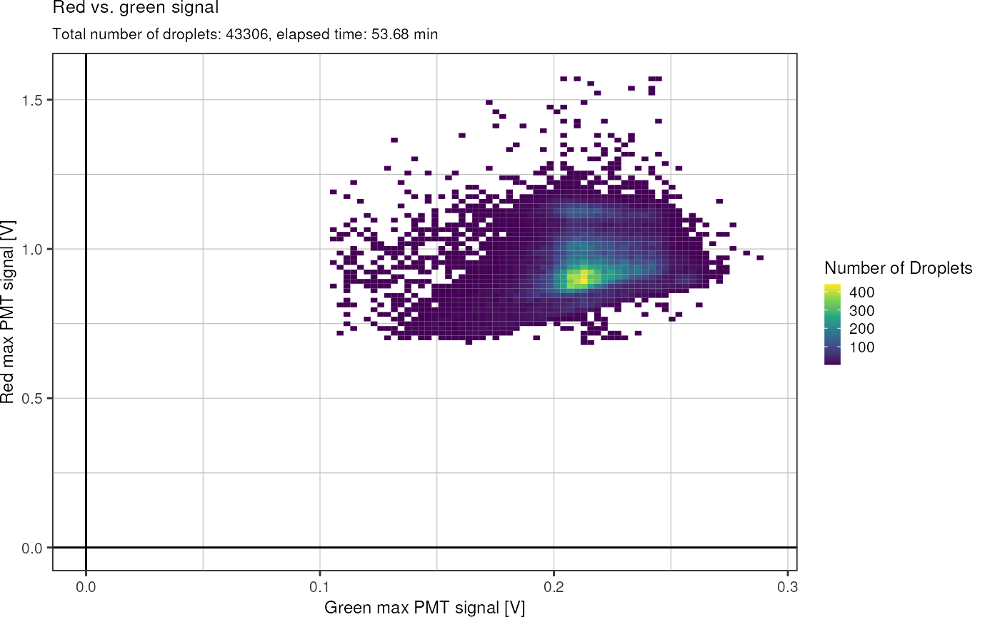
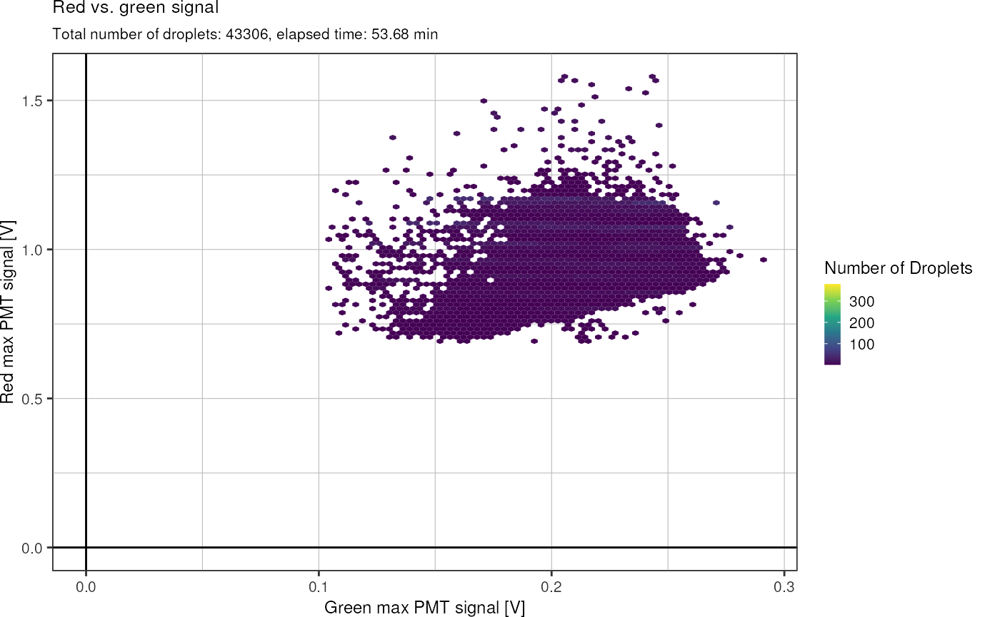
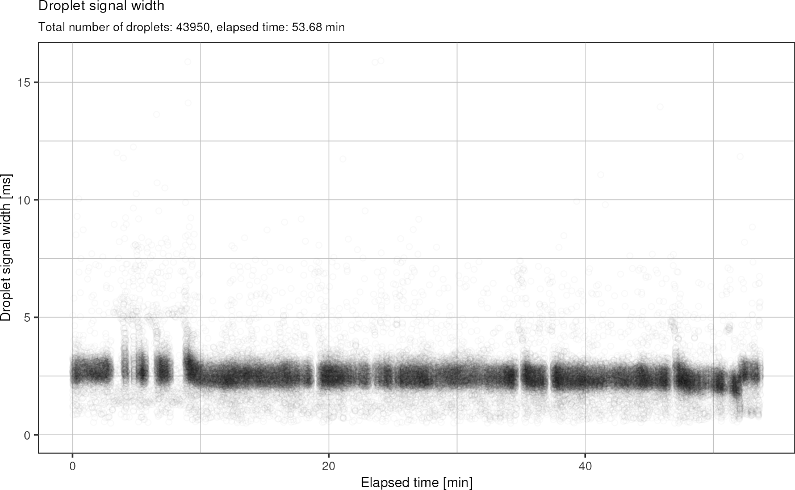
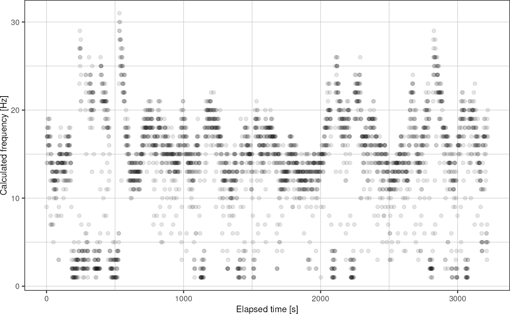

FADS Analysis
fads_analysis.Rmd
library(picoinjector)
library(dplyr)
#>
#> Attaching package: 'dplyr'
#> The following objects are masked from 'package:stats':
#>
#> filter, lag
#> The following objects are masked from 'package:base':
#>
#> intersect, setdiff, setequal, union
library(readr)
library(ggplot2)TSV file
Using the LabVIEW software, a TSV file can be recorded during an experiment, where every row corresponds to a droplet that is recognized by the sorter. For a droplet flowing across the focus spot to be recognized, the signal captured by the PMT has to exceed a defined threshold in terms of amplitude and duration. This way, droplets can be distinguished from the background signal.
fads <- fads_read_tsv("data/fads/220916/pi30v4_1.txt")
fads
#> # A tibble: 7,680 × 6
#> time blue green red width spacing
#> <dbl> <dbl> <dbl> <dbl> <dbl> <dbl>
#> 1 3635190653. 0 0.229 0.942 2.42 12.4
#> 2 3635190703. 0 0.227 1.00 2.76 8.10
#> 3 3635190777. 0 0.226 0.911 2.38 13.0
#> 4 3635190830. 0 0.222 0.820 1.79 8.84
#> 5 3635190905. 0 0.225 1.00 2.69 14.1
#> 6 3635190963. 0 0.221 0.927 2.46 9.64
#> 7 3635191046. 0 0.242 0.929 2.80 15.1
#> 8 3635191101. 0 0.236 0.994 2.62 8.59
#> 9 3635191178. 0 0.233 1.00 2.9 13.8
#> 10 3635191228. 0 0.229 0.954 2.62 7.61
#> # … with 7,670 more rowsThis function allows to plot the red against the green signal:
fads %>%
fads_remove_outliers() %>%
fads_plot_red_green()
Same plot, but with hexagonal glyphs:

Lets look at the signal width as well:
fads %>%
fads_remove_outliers() %>%
fads_plot_width()
Plot width vs. time:
fads %>%
fads_remove_outliers() %>%
fads_plot_width_time()
Plot signal vs. time:
fads %>%
fads_remove_outliers() %>%
fads_plot_signal_time()
Plot droplet frequency over time:
fads_plot_frequency(fads)